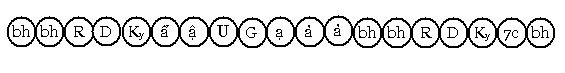
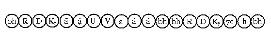
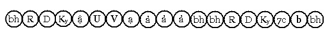

Bài 16 TÂM LỘ ĐẮC ĐẠO I. ĐỊNH NGHĨA. Tâm lộ đắc Đạo là quy trình sinh diễn của tâm thức khi nhận Níp-Bàn làm cảnh để sát trừ phiền nảo, diệt trừ kiết sử trói buộc trong luân hồi. Tâm có năng lực sát trừ phiền nảo gọi là tâm Đạo (maggacitta). II. PHÂN TÍCH Bậc Thánh chia làm 4 bậc, phàm nhân chứng Đạo lần đầu tiên gọi là Sơ Đạo (pathamamagga), sau sát-na Sơ Đạo là sát-na Sơ Quả, kể từ khi ấy trở đi vị này đã nhập vào Thánh tộc, không còn lui sụt xuống làm phàm nhân, cho đến khi nào Vô dư Níp-Bàn (parinibbāna) thì giải thoát hoàn tòan. Vị ấy tu tiến Minh sát lần lượt chứng Đạo lần thứ 2 gọi là Nhị Đạo (dutiyamagga), chứng đạo lần thứ 3 gọi là Tam Đạo (tatiyamagga). Ba bậc Thánh đạo này tuy sát trừ phần lớn những phiền não, nhưng chưa trọn vẹn nên 3 bậc Thánh này gọi là Thánh Hữu học (sekkhaka). Khi nhận Níp-Bàn làm cảnh thứ 4 sát trừ mọi kiết sử và phiền não gọi là đạt Tứ Đạo (catutthamagga) trở thành vị Thánh Vô lậu hay vị A La Hán (arahanta), tâm Tứ Đạo có tên gọi là Arahattamagga, vị ấy trở thành Thánh Vô học (asekkhaka). Tâm Sơ Đạo có tên là Đạo Dự Lưu (hay Nhập Lưu) (sotāpattimagga), nghĩa là nhập vào dòng Thánh vức, sẽ xuôi chảy chắc chắn đến Vô dư Nípbàn . Như vậy lộ Đạo (maggavīthi) có 2 cách: - Lộ đắc Sơ Đạo, chỉ cho từ phàm chủng sang Thánh chủng. 1. Lộ đắc Sơ Đạo. Lộ này diễn tiến như sau: Người độn căn:  Người lợi căn:
Ký hiệu: Ẩ: Chuẩn bị (parikamma) Lộ này có được: - 8 sát-na tâm khách: Hướng ý môn, 4 (hay 3) sát-na đổng lực dục giới
có trí, sát-na tâm Sơ Đạo và 2 (hay 3) sát-na tâm Sơ Quả. 2. Lộ đắc ba Đạo cao: Diễn tiến dòng tâm thức như sau: - Người độn căn:  - Người lợi căn:  Ký hiệu: V: Tiến bậc (vodāna) Lộ này có được: - Sát-na: có 8 sát-na tâm khách III. LÝ GIẢI. 1. Giải về các đổng lực thiện hợp trí trong lộ đắc Đạo. Trong lộ đắc Đạo, đổng lực thiện hợp trí xuất hiện 4 hay 3 sát-na (tùy theo người), có tên gọi theo thuật ngữ Siêu Lý là: Chuẩn bị (Ẩ) (parikamma), Cận hành (Ậ) (upacāra), Thuận thứ (U) (anuloma), Chuyển tánh (G) (gotrabhū), hay Tiến bậc (V) (vodāna). Luồng đổng lực trong lộ đắc Đạo luôn có túc số là 7 sát-na, người độn căn có 2 sát-na Quả sanh kế tiếp sát-na tâm Đạo, người lợi căn có đến 3 sát-na tâm Quả sanh kế tục sát-na tâm Đạo. *Thế nào là tâm Chuẩn bị? Vì có phận sự bố trí, sắp xếp môi trường cho đổng lực An chỉ thuận tiện sanh khởi, như tâm thiền (jhānacitta), tâm Đạo (maggacitta), tâm Quả Siêu thế (lokuttaraphalacittia), tâm Thông (abhiññācitta). Đổng lực dục giới có trí ấy gọi là parikammacitta (tâm Chuẩn bị). Các Ngài đã giải tự như sau: Indriyasamatādīhi paritobhāgehi appanā kriyāti sajjīyati etenāti
parikammaṃ Hay là giải tự cách khác: Parikaroti appaṇaṃ abhisaṅkhāroti parikammaṃ * Thế nào là tâm Cận hành? Đổng lực nào sanh khởi gần giới tuyến của đổng lực An chỉ, gọi là Cận hành. Các Ngài giải tự như sau: Appanāya upaccaratīti upacāro Hay: Samīpe carātīti upacāro (nghĩa như trên). * Thế nào là tâm Thuận thứ? Đổng lực Dục giới tương hợp với tâm An chỉ trên khía cạnh, đào thải các pháp đối lập (patipakkhadhamma hay paccanīkadhamma) (như năm triền cái ở Sơ Thiền... đào thải Nghi và Kiến ở Sơ đạo, loại trừ dục tham và sân thô thiển ở Nhị Đạo...). Tâm đổng lực ấy có tên là Thuận Thứ (anulomacitta). Các Ngài giải thích như sau: Paccanīkadhammavidhamanena appanāya anukulanti anuloma Hay cách giải thích khác: Pubbàparànaṃ anulometīti anulomaṃ *Thế nào là tâm Chuyển tánh? Chữ Gotrabhū chỉ cho "đang vượt qua ranh". Gọi là Chuyển tánh là chỉ cho đổng lực nào sanh lên cắt đứt tánh cũ (hay lãnh vực cũ) trở thành tánh mới (hay lãnh vực mới), như từ lãnh vực Dục giới lên lãnh vực thiền, từ Phàm chủng sang Thánh chủng, hoặc từ lãnh vực cũ sang lãnh vực mới như từ Sơ thiền sang Nhị thiền... Các Ngài có giải tự tiếng Gotrabhū như sau: Gottaṃ bhāveti vaḍḍhetīti gotrabhū Hay là: Gottaṃ abhibhuyyati chijjati etthāti gotrabhū * Thế nào là Tiến bậc? Là tâm đổng lực Dục giới sanh lên để tịnh khiết hóa nội tâm của các bậc Thánh Hữu học, bằng cách tiến đạt những tầng Thánh cao hơn. Có lời giải tự như sau: Vodānetīti vodānaṃ 2. Cảnh của đổng lực Dục giới trong lộ đắc Đạo. Trong lộ thiền tâm (jhānacittavīthi) cảnh của 4 sát-na Chuẩn bị, Cận hành, Thuận thứ, Chuyển tánh là Quang tướng chế định, trong lộ đắc Đạo cảnh của chúng là một trong ba tướng hữu vi: Vô thường tướng (aniccālakkhaṇa), Khổ tướng (dukkhalakkhaṇā) và Vô ngã tướng (anattālakkhaṇa). Tức là nhận tướng hữu vi pháp làm cảnh. Riêng về sát-na Chuyển tánh hay Tiến bậc thì thì nhận cảnh là Níp-Bàn nhưng chưa sát trừ được phiền não. 3. Giải về Chuyển tánh và Tiến bậc. Trong lộ thiền tâm, mỗi khi chứng đạt Thiền đều có Chuyển tánh, trái lại trong lộ đắc Đạo, Chuyển tánh chỉ xuất hiện một lần, 3 lộ đắc Đạo sau do Tiến bậc (vodāna) đảm trách là vì nói về lãnh vực có 2 loại: lãnh vực hiện thể (vatthabhūmi) và lãnh vực trừu tượng (avatthabhūmi). Trong lộ thiền, hành giả Chỉ tịnh có mục đích tiến đạt lên lãnh vực thiền theo tầng cấp bậc, mà thiền vức là lãnh vực hiện thể, mỗi thiền vức có cảnh khác nhau, do đó tâm Chuyển tánh phải xuất hiện để làm phận sự này. Trong lộ đắc Đạo, hành giả Quán minh có mục đích đạt Níp-Bàn cảnh để sát trừ phiền não, phiền não thuộc lãnh vực trừu tượng, còn Níp-Bàn không trừu tượng cũng không hiện thể. Ông Visākha có hỏi bà Dhammadinnā: - Thưa Ni cô, Níp-Bàn lấy gì làm tương đương? - Hiền giả Visākha, câu hỏi đã đi quá xa, vượt qua giới hạn câu trả lời ... (Kinh Cūlavedalla – Trung Bộ I). Lần đầu tâm Chuyển tánh xuất hiện nhận cảnh Níp-Bàn cắt đứt phàm tánh trở thành bậc Thánh, những lộ sau không cần tâm Chuyển tánh làm phận sự "cắt đứt" này nữa, vì Thánh chủng là chủng tánh Siêu việt vượt ngoài Tam giới, không còn một chủng tánh nào cao thượng hơn. Tuy bậc thánh có cao thấp khác nhau như: Bậc Dự lưu thấp hơn bậc Nhất Lai.. nhưng bậc Dự Lưu cũng vẫn thuộc về Thánh chủng, ví như tân Tỷ kheo, trung Tỷ kheo, thượng Tỷ kheo, tất cả đều là Tỷ kheo chỉ khác nhau qua hạ lạp. Cũng vậy, các bậc Thánh cao thấp khác nhau do thanh lọc được phiền não nhiều hay ít, nhưng tất cả đều là bậc Thánh. Vì lý do này, những tâm Đạo và tâm Quả Siêu thế gọi chung là tâm Siêu thế (lokuttaracitta). Và cũng không có tâm nào trong Tam giới có năng lực cắt đứt được Thánh chủng. Mặt khác, Níp-Bàn cảnh không hề thay đổi cho dù tầng đắc Đạo có thay đổi, khác với thiền cảnh là cảnh thay đổi tùy theo từng bậc thiền, nên trong 3 lộ đắc Đạo cao thay vào sát-na Chuyển tánh là sát-na Tiến bậc. Sát-na này có công năng thanh khiết hóa nội tâm của vị Thánh ấy. Ví như nước bùn đưa vào bình lọc trở thành trong sạch nhưng còn vương mùi bùn, người lọc nước không còn dùng bình lọc nữa, chỉ cần dùng những phương tiện khác làm mất mùi bùn, để nước hoàn toàn thanh khiết. Bình lọc ví như sát-na tâm Chuyển tánh, những phương tiện khác ví như sát-na tâm Tiến bậc trong 3 lộ đắc Đạo sau. 4. Sự sát trừ phiền não của tâm Đạo và tâm Quả Siêu thế trong lộ đắc Đạo. Tâm Sơ Đạo sát trừ tuyệt hai phiền não nghi (vicikicchā) và kiến (diṭṭhi) cùng những loại phiền não thô thiển đưa chúng sanh rơi vào 4 khổ cảnh (địa ngục, ngạ quỷ, súc sanh và a-tu-la). Vị ấy được gọi là bậc Dự lưu đạo (sotāpatti) hay Dự Lưu Quả (sotapannā). Trí nhận cảnh Níp-Bàn đang sát trừ phiền não trong tâm Sơ đạo được gọi là Vị tri quyền (anaññātanassāmītindriya) (tức là biết rõ cái chưa từng biết, ở đây ám chỉ Níp-Bàn cảnh). Tâm Nhị đạo sát trừ phần lớn tham dục và sân cùng với các phiền não tùy tùng, tuy chưa dứt tuyệt được tham dục và sân nhưng chúng không thể hồi phục sức mạnh được. Ví như rễ cây bị chặt đi phần lớn, tuy còn nhưng không thể tái phát triển vững mạnh. Vị Thánh này gọi là bậc Nhất lai đạo (sakadāgāmimagga) hay bậc Nhất lai. Tâm Tam đạo sát tuyệt mọi phiền não thô và phiền não trung bình, chỉ còn lại những phiền não vi tế, nhất là sát tuyệt tham dục và sân. Vị thánh này gọi là bậc Bất lai đạo (anāgāmimagga) hay bậc Bất Lai. Tâm Tứ đạo sát tuyệt mọi phiền não còn dư sót, đạt đến trạng thái giải thoát hoàn toàn mọi phiền não, trở thành bậc A La Hán đạo (arahantamagga) hay bậc A La Hán.. Trí sát phiền não từ Sơ quả đến A La Hán đạo, gọi là Dĩ tri quyền (aññindriya) (tức biết Níp-Bàn, cảnh đã từng biết). Trí trong A La Hán quả được gọi là Cụ tri quyền (aññātāvindriya) (tức là biết trọn vẹn Níp-Bàn cảnh). Như vậy: - Tâm Chuyển tánh, tâm Tiến bậc nhận Níp-Bàn làm cảnh nhưng chưa
sát trừ phiền não. Cũng nên ghi nhận rằng: 4 tâm Đạo (Sơ, Nhị, Tam và Tứ đạo) mỗi tâm chỉ sinh lên một lần mà thôi, sau tâm Đạo là sát-na tâm quả Siêu thế tương ứng ngay, tức là khi đắc Đạo thì đắc Quả ngay không gián đoạn. Tâm Quả Siêu thế trong lộ đắc Đạo có sát trừ phiền não không? Tâm Quả Siêu thế là kết quả từ tâm Đạo, tuy không trực tiếp sát trừ phiền não như tâm Đạo, nhưng tâm Quả Siêu thế trong lộ đắc Đạo gián tiếp góp phần vào việc tận trừ phiền não, bằng cách làm tắt lịm "hơi tàn" của phiền não đã bị sát trừ. Có ví dụ như sau: Có một đống lửa đang cháy, một người mang một thùng nước lớn đến tạt vào đống lửa, lửa tắt nhưng vẫn còn bốc khói và còn hơi nóng âm ỉ. Người ấy mang thêm 2 hay 3 thùng nước nữa tạt vào, hơi khói và sức nóng nguội lạnh hoàn toàn. Thùng nước đầu ví như tâm Sơ đạo, 2 hay 3 thùng sau ví như 2 hay 3 sát-na tâm Quả Siêu thế trong lộ đắc Đạo. 5. Tương quan giữa các quyền nơi vị Thánh. Ngài Buddhaghosa có giải rằng: Hành giả có Tín quyền mạnh, tướng Vô thường hiện rõ hơn, hành giả này quán tướng Vô thường chứng đắc Sơ đạo, gọi là bậc Tùy tín hành, từ Sơ quả đến A La Hán quả gọi là bậc Tín giải. Hành giả có Định quyền mạnh, Khổ tướng hiện rõ hơn, hành giả quán Khổ tướng chứng đắc Đạ0 - Quả Siêu thế (4 Đạo lẫn 4 Quả Siêu thế), gọi là bậc Thân chứng. Hành giả có Tuệ quyền mạnh, tướng Vô ngã tướng hiện rõ hơn, quán tướng vô ngã chứng Sơ Đạo gọi là bậc Tùy pháp hành, chứng đắc 7 bậc cao kế tiếp là bậc Kiến đắc. Vị Thánh Sơ quả có tuệ quyền mạnh chỉ trở lại cõi dục 1 lần, gọi là bậc Nhất sanh Dự lưu. Vị Thánh Sơ quả có tuệ quyền ngang với định quyền, sẽ trở lại cõi dục từ 2 – 6 lần, gọi là bậc Lục sanh Dự lưu. Vị thánh Sơ quả có tuệ quyền yếu, sẽ trở lại cõi dục 7 lần, gọi là bậc Thất sanh Dự lưu. 6. Lộ phản khán trong tâm lộ đắc Đạo. Tiếp theo tâm lộ đắc Đạo là hữu phần cơ bản sanh khởi hàng trăm hàng ngàn sát-na, rồi một tâm lộ ý môn khởi lên có phận sự xem xét (phản khán) lại lộ đắc Đạo, gọi là tâm lộ phản khán Đạo (paccavekkhanamaggacittavīthi). Đối với 3 lộ đắc Đạo đầu thì do một trong bốn đại thiện có trí làm đổng lực phản khán. Đối với lộ đắc Tứ đạo thì 1 trong 4 tâm đại Hạnh có trí đảm trách. Diễn tiến như sau: Rúng động, Dứt dòng, Hướng ý môn, 7 sát-na đổng lực rồi trở về hữu phần cơ bản, tâm lộ này tái hiện nhiều lần theo thích ứng rồi diệt đi. Trong giai đoạn tái hiện lộ phản khán, nếu hành giả tu tiến thuần thục, đổng lực ly trí cũng có thể phản khán được. Phản khán lộ đạo có 5 cách: Phản khán Đạo vừa chứng đắc. Trong 5 cách phản khán, phản khán Đạo, Quả và Níp-Bàn do tâm đổng lực có trí đảm nhận. Vị Thánh Tứ Quả không còn phiền não dư sót nên chỉ có 4 cách phản khán. Các Ngài bảo rằng: Tuệ phản khán có 19 thứ, tức là: 3 lộ Đạo của vị Thánh Hữu học có 15 tuệ phản khán, lộ Tứ Đạo có 4 tuệ phản khán, thành ra 19 tuệ phản khán. Số lượng tâm lộ phản khán: Tất cả có 368 lộ phản khán Đạo, cách tính như sau: Lấy Đạo, Quả và Níp-Bàn làm cảnh để phản khán, nhân với 4 đổng lực có trí thành 12 lộ. Tổng cộng 2 loại phiền não: đã sát trừ và còn dư sót là 10 loại, nhân với 8 đổng lực phản khán thành 80 lộ (đổng lực thiện cho ba lộ đắc Đạo đầu, đổng lực đại Hạnh cho lộ đắc tứ Đạo). Tổng cộng là 92 lộ phản khán cho mỗi lộ đắc Đạo. Nhân cho 4 lộ đắcĐạo thành 368 tâm lộ phản khán Đạo. -ooOoo- Ðầu trang | Mục lục | 01 | 02 | 03 | 04 | 05 | 06 | 07 | 08 | 09 | 10 | 11 | 12 | 13 | 14 | 15 | 16 | 17 | 18 | 19 | 20 | 21 | 22 | 23 | 24 | 25 |